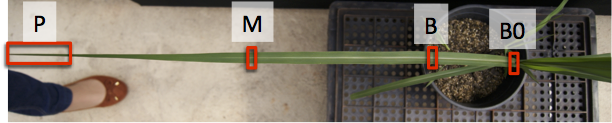

Sugarcane leaf development
One of our goals is to generate a public catalogue/atlas of sugarcane transcripts. Currently there are only ~240K EST available in GenBank, and there is not much genomic information publicly available. Here at the CTBE, we have been generating data in the form of transcriptome and genome sequencing and we are commited to release that data, assemblies and annotation, to the public. We are convinced that making large genomics and functional genomics datasets avaiable for the sugarcane cammunity, will aid in the understanding of C4 photosynthesis, complex polyploid genomes and in the adoption of molecular breeding approaches.
One of our first projects, contributing towards the Sugarcane gene catalogue, is a study of the leaf development in Sugarcane, genotype SP80-3280. The leaf of C4 plants, such as sugarcane have a developmental gradient along the leaf. We have studied the sugarcane leaf +1 (First leaf from top to bottom with the delawp fully exposed), examining four different segments, as show in the following figure. More details are available in Mattiello et al., 2015.

For each region we collected total RNA, from several individuals. RNA was processed with the total mRNA library preparation kit from Illumina (stranded-chemistry) and sequenced on a HiSeq2500 instrument using paired-end reads (2x100bp). The following table has a summary of the sequencing and quality evaluation.
| Segment | Individual | Quality trimmed reads | rRNA | Plastid | Mitochondria | Remaining paired-end reads |
|---|---|---|---|---|---|---|
| Bo | 235Bo | 55.209.307 | 32.42% | 0,90% | 0,11% | 37.042.139 |
| M | 235M | 22.796.562 | 37.26% | 1,30% | 0,13% | 14.146.578 |
| T | 235P | 30.003.751 | 16,78% | 1,11% | 0,05% | 24.722.651 |
| Bo | 234Bo | 19.764.755 | 35,28% | 0,46% | 0,06% | 12.779.105 |
| M | 234M | 49.018.540 | 12,72% | 0,25% | 0,02% | 42.721.041 |
| T | 234P | 34.074.014 | 19,30% | 0,41% | 0,04% | 27.316.488 |
| B | 138B | 18.689.034 | 6,72% | 0,11% | 0,01% | 16.543.744 |
| Bo | 138Bo | 29.404.833 | 11,78% | 0,16% | 0,02% | 25.928.715 |
| M | 138M | 36.072.049 | 13,14% | 0,37% | 0,03% | 31.261.141 |
| T | 138P | 58.826.816 | 34,52% | 0,24% | 0,02% | 50.767.882 |
| B | 163B | 10.170.698 | 34,52% | 0,42% | 0,05% | 6.659.348 |
| M | 163M | 21.348.210 | 27,48% | 0,28% | 0,04% | 15.476.837 |
| T | 163P | 39.844.966 | 16,47% | 0,25% | 0,03% | 33.233.302 |
| B | 234B | 48.065.788 | 12,79% | 0,18% | 0,02% | 41.882.487 |
Downloads
- Strand-specific transcript assembly
- Transcript annotation
- Deduced proteins
- Identified Transcription Associated Proteins (Transcription factors and other transcriptional regulator using the methods described in Perez-Rodriguez, et al., 2010)
- Identified KEEG metabolic pathways
- Orthologous gene groups identified using OrthoMCL and an inflation value of 1.5 (SACC= Saccharum hybrid cultivar SP80-3280, OSAT= Orysa sativa, SBIC= Sorghum bicolor, SITA= Setaria italica, ZMAY= Zea mays)
- Accession numbers for transcripts at NCBI